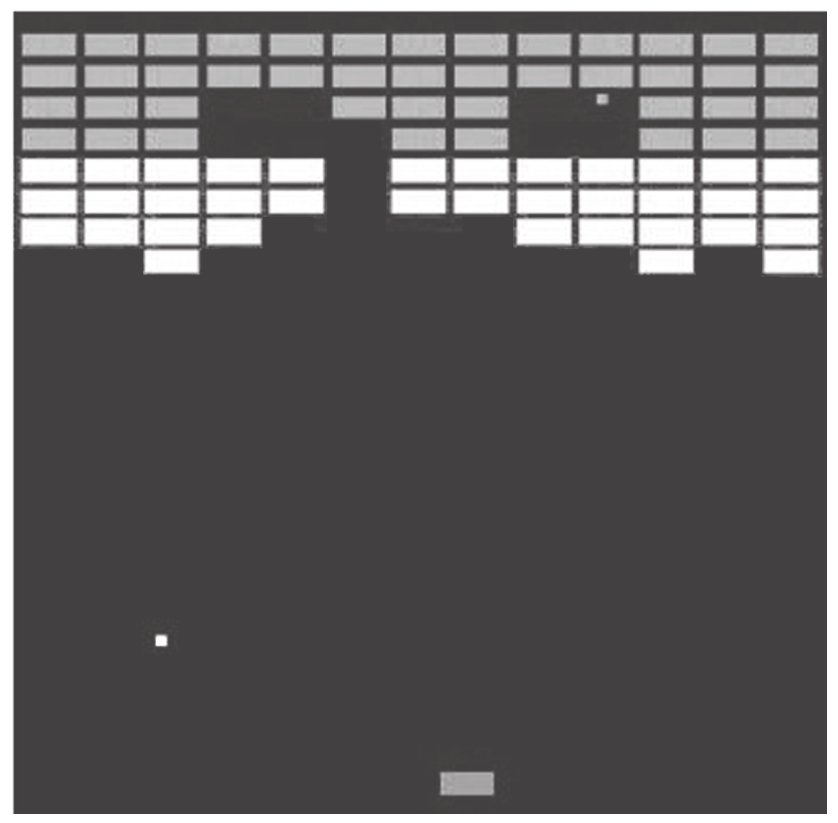

让我们用RxJS来实现一个很经典的游戏breakout。在中文的世界里，这个游戏有一个不大正式的名字叫“打砖块”，即使你不是一个游戏爱好者，相信你也至少见过或者听说过这款游戏。
这个breakout游戏的历史可以回溯到20世纪70年代，现在依然可以在很多游戏平台上看到，图15-1就是早期breakout游戏的界面。
在游戏的界面中，顶部是一些由长方形砖块（brick）构成的阵列，界面底部是一个可以左右移动的球拍（Paddle），游戏开始之后，会有一个小球在界面中跳动，小球如果和砖块、墙壁、球拍发生碰撞，就会被弹开，当然，砖块和小球碰撞之后会被击碎。
玩家的任务就是控制球拍左右移动，确保小球不要从界面底部飞出去，如果小球飞出下面界面，游戏就结束了，同时，要让小球尽量多地击碎界面上的砖块，每击碎一个砖块，玩家就会获得游戏分数的增加。
这个游戏的规则非常简单，但也正因为简单所以好玩，很让人上瘾。你可能玩breakout玩得很熟练，但你是否知道，这个游戏的创造者是鼎鼎大名的苹果公司两位创始人史蒂夫·乔布斯（Steve Jobs）和史蒂夫·沃兹尼亚克（Steve Wozniak）。

图15-1 早期breakout的游戏界面
1976年，在联手创建苹果公司之前，乔布斯和沃兹尼亚克已经是亲密好友，那时候，乔布斯在游戏界很有名望的Atari公司工作，而沃兹尼亚克则是惠普的工程师。有一天，Atari的创始人诺兰（Nolan Bushnell）交给乔布斯一个任务，开发一款单人能够玩的弹球游戏，也就是breakout游戏的概念。
在那个时代，软件并没有现在这么发达，制作游戏更多是电子工程师利用芯片来连线完成，而不是敲打键盘编写代码，硬件芯片的成本要比软件高得多，所以如果使用更少的芯片硬件，就意味着能够节省大量批量生产的成本。为了激励乔布斯好好干，诺兰告诉乔布斯，如果能够以少于50个芯片实现这个游戏，那每少用一个芯片，在原有游戏制作酬劳的基础上，都会多一份奖金。
诺兰估计乔布斯一个人也搞不定这个任务，但是他知道乔布斯是沃兹尼亚克的好朋友，而沃兹尼亚克是一个卓越的工程师，如果乔布斯能够拉沃兹尼亚克一起来做，那就有戏。诺兰的预期是对的，至少部分是对的，乔布斯真的去拉沃兹尼亚克一起干，而且说，搞定这一单任务之后，两个人可以平分收益。
沃兹尼亚克是一个典型的工程师，他喜欢游戏，现在有机会自己参与制作游戏，当然十分兴奋，但是，当他看到breakout这个游戏的概念之后，觉得这个游戏需要花费几个月的时间才能完成。乔布斯利用了自己强大的“扭曲现实气场”，告诉沃兹尼亚克这个工作必须在四天之内完成，而且必须尽量少地使用芯片，沃兹尼亚克相信了，于是，两个人开始连夜加班开工了。最后，他们居然真的在四天之内完成了breakout游戏，而且只使用了45个芯片！
Atari的老板诺兰当然也很高兴，按照之前和乔布斯的契约，他除了支付乔布斯制作游戏的酬劳，还给了他少用5个芯片的奖金，但是，他没有料到的是乔布斯只和沃兹尼亚克平分了基本工作酬劳，却根本没有让沃兹尼亚克知道奖金的事。
直到10年之后，沃兹尼亚克才知道这个任务还有奖金。在这10年间，乔布斯和沃兹尼亚克联合创立了苹果公司，这个公司如今已经成为了电子消费品领域的巨头，两个人又因为各自的原因离开了苹果公司——10年能够发生的事情太多。
在10年之后，诺兰在接受一次杂志访谈的时候提到Atari当年的发展史，无意中提起当年两个苹果创始人曾经为Atari制作过一款游戏，而且说到50个芯片之内每少用一个芯片就多一份奖金的故事。看到这个报道，沃兹尼亚克才知道当年自己被乔布斯蒙了一把，当沃兹尼亚克去问乔布斯这是怎么一回事的时候，乔布斯说一定是当事人记错了，当时根本就没有奖金。
这段历史在《史蒂夫·乔布斯传》 [1] 中有记录，在这里讲这个故事，是想说明，不管精明如乔布斯还是朴实如沃兹尼亚克，都很清楚breakout这样一个游戏功能并不简单，要不然沃兹尼亚克也不会一开始觉得需要花费几个月的时间，同样，他们都知道利用更少的资源（芯片）来制作游戏意味着更多价值——至少乔布斯知道。
现在，让我们尝试自己来实现这个breakout游戏，一样面临两个挑战：第一，如何实现这个并不简单的功能？第二，如何用尽量少的代码来完成这个功能？使用RxJS，你会发现这两个挑战都可以很容易攻克。
[1] 《史蒂夫·乔布斯传》，第四章Atari and India，作者Walter Isaacson。